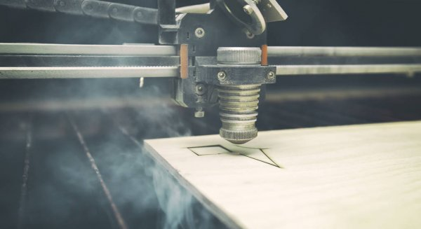
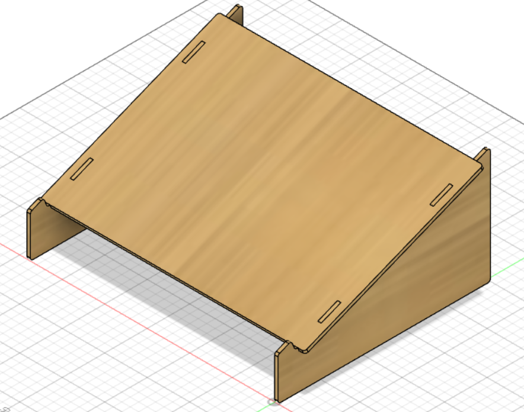
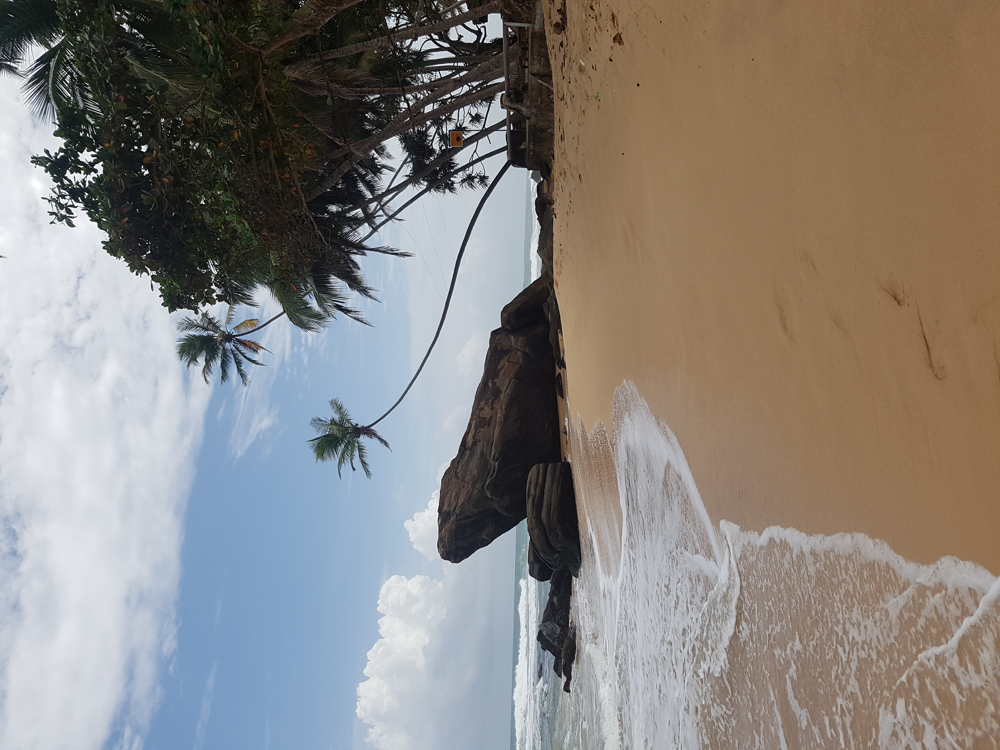

Laser cut pressfit project
The purpose of this project was to design a parametric objest that will be laser cut and has to be press fitted together. This projecta was worked in the course Manufacturing Processes (VÉL403G) at the University of Iceland.

The beginning
The first thing that I needed to do was to find an idea for an object to buid. I wanted to make something that I would actually use, and not something that I would just put on a shelf or something. I started to search the web for some inspiration and finally I saw this video and decided that I wanted to make this object due to the fact that this is something that I will use in my everyday life.
I decided to make the object in the program Fusion 360 and since I had no previous experience with that program, I had to educate myself on that program. The professor of the course posted this video as well as the previously linked video which gave me a deeper understanding in Fusion 360, now I was comfortable about starting my project.
Fusion 360
The most important part of the project in my opinion is th make the design out of set parameters to meake the design scaleable. I decided to measure the dimensions on my computer and calculate what the parameters shold be. For the parameter "kerf" I decided to put it as 0.2mm for the time being and change it later on when I have actually calculated what the kerf on the device is. As you can see, the size of the object is completely adjustable by changing the parameter called "main". If you want to make a similar laptop stand but have a bigger or a smaller computer than me, you can adjust the design to your computer simply by changing the parameter "main".
I started of by creating a component to the design and made that component one side of the object and sized it with the parameters that I had previously created.

I then needed to extrude the object with the parameter "þykkt" by pressing "e" on the keyboard and then clicking th object. After that I decided to round the edges with the parameter "rúnun" by pressing "f" on the keyboard and choosing the edges I wanted to round. After that I just had to copy the side component and paste another one with the distance between them set to the parameter "legBreidd" because that distance works perfectly for my computer. That side then became a new component in the design.
After that was completed, I needed to make the top part of the design. I created a new component for the top and designed it on the plane that the slope of the sides are on. I did this by clicking "look at" and then the plane I wanted.
First, I set the dimensions of the top according to the size of my computer with the previously established parameters and make a hole where one of the side is so that the object can later be pressfited together. I did this by drawing a rectangle on the sketch and positioned it with the parameters. After that I pressed "l" on the keyboard and made 2 a line from the center of the top to the center of the bottom, and another from the middle of the right side to the middle of the left side. After that, I selected both the lines and pressed "x" on the keyboard to transform them into construction lines. After that, I mirrored the holes by clicking mirror and highlighting the rectangle that will become the hole, and lastly click on the coustruction line that goes from top to bottom to mirror the rectangle to the other side. Then I do the same thig again but now I select the original rectangle as well as the one I just created and use the other counstrucion line to mirror the rectangles lower on the sides.
Now the sketch looks like this.

After that, I clicked "e" on the keyboard to extrude all the sections on the sketch I created exept the 4 rectangles I mirrored. I extruded the the top component downwards, into the sides length that is equal to the parameter "þyktt". The nex thing I did was to click on combine
and use the side component as my target body and the top component as my tool body, click on cut and keep tools. Then I did the same thing to the other side. After that I rounded the edges the same way as before.
Now the design had 3 components, one top that fits on to the two sides.

Since I want this laptop stand to be stable, I decided to add a supporting components to the design. I started by creating an offset plane
from the back of the sides and I offseted it according to my parameters.

After that, I started a sketch on thet plane and clicked on "Intersect" and clicked on bodies and then selected both of the sides.
I then drew a rectangle that I sized according to my parameters and highlighted the parts of the sketch that I want to extrude according to my parameters.
I then made another supporting component the same way as before, but the offset plane is found from the front of the sides as opposed from the back. Then I rounded the edges the same way as I have done before. After that I used the combine button the same way as I have done before and used one side as the target body ans both the support components as the tool bodies. Then I did the same thing to the other side.
Now the object had been completed and it looked like this.
Measure the kerf
Measuring the kerf was worked in a group. My groupmembers were Hrannar Þórarinsson, his website and Magnús Snær Ríkarðsson, his website.
We went to fablab Reykjavík and in fusion 360 we drew a 100*10mm rectangle with cut-lines with 10mm intervals inside the rectangle. We sent that file to the laser cutter and ended up with the following.
After that we took one square out of the rectangular space and measured the empty space, that space was measuerd to be 12,08mm. Next we measured the square that we removed, that square was measured to be 9,8mm. In total there were 11 lasercuts done on the rectangle so to measure the kerf we used the formula (12,08-9,8)/11 = 0,207 which is our kerf. I then went to my parameters and set the parameter "kerf" to 0,207.
DXF for laser
Personally I thought that this was the most tricky part of the project, so I was really happy when I found this add-on to Fusion 360. The add on is called DXF for laser and you can find the add-on here. Now all I had to do to was click on "Save DXF for laser cutting" and then select a face ant set the laser kerf to the parameter called "kerf".
Then I did the same thing for the other faces of the design.
Gimp
Since I wanted to engrave a photo on the laptop stand, I decided to use the program Gimp to do that. I had no previous knowledge on this, I decided to look for videos on that program and found this and this videos which helped me greatly understand how Gimp works, and also a little bit about moving the photos into Inkscape, a program that I will go more into later. To start of I needed to find a photo That I would like to use, and I decided to use the following photo.

I uploaded this photo into Gimp and since I wanted to make the photo a circle I had to click on ellipse and choose the part of the photo I wanted.
After that, I had to click on invert and then press delete to only be left with what is inside the circle.
After that, I had to click on invert again and then press the button crop to selection to crop the photo.
After that, I chose a filter that I liked and then played around with the settings that pop up until I liked the photo.
Finally, I had gotten a photo which I was satisfied to have on my design.
Inkscape
To combine all of the files that I had completed I decided to use the program Inkscape. Since I had no previous experience in Inkscape, I decided to watch some videos to learn, I found the following videos to be very helpful. Video1 was very helpful and tought me how to connect all the lines in Inkscape. Video2 and the last quarter of Video3 helped me get a good understanding on the basics of Inkscape.
I started of by setting the size of the document to the dimensions of the wood that I will be cutting. I did that by clicking on "File" in the top-left corner and selecting document properties from the drop-down. Then I typed in the correct dimensions.
Then I draged the DXF files I had previously created in to Inkscape.
Now I had to check if all the lines on my objects are connected. I did this by highligting an object and clicking a color at the bottom to fill it, as seen in "Video1". I did that and saw that the objects did not fill as seen in the following photo.
This is a really simple fix, I simply followed the instructions in "Video1" to connect all the nodes in an object. After that I tried to click fill again to see what happened and saw that it worked perfectly.
I then did this to the other two elements of my design and after that I copied the elements which I need two of, the side and the support element. Lastly I placed all the components of the design on the document itself.
Now I had to add the photo that I had previously created in to Inkscape. I resized the photo by holding ctrl on the keyboard, select a corner on the photo and drag it to make it a size that I was happy with. After that, I selected both the photo and the top component anc clicked "shift+ctrl+A" on the keyboard to get the align window. in that widow I selected "Relative to biggest object" and clicked on the following to buttons to put the photo in the center of the top component.
Now I only had to had to click "shift+ctrl+F" to open the fill and stroke window. For the photo I clicked on "Stroke paint" and selected "No paint" an for all the other components I clicked on "Stroke style" and changed the width to 0,02mm. After all that was completed, I saved the following as a pdf file.
Laser cutting
Now that it was time start the laser cutting process, I made my way to fablab. I decided to get help on how the laser cutter works from a member of the fablab team, and that proved to be extremely helpful. I copied the pdf fil that I had previously created and put it on a USB key that I then pluggen in to the computer that controls the laser cutter. This is the printer which was used.
I followed all the instructional settings and started printing.
After the laser cutting has finished, I put the object together and was really happy with the outcome and will definetly use this in the future. Hera come two photos that show the object in action.
Below you can find the PDF file that I used.
Design files
Here are all the files I used in this project: Design files - Laser cutting projesct
Time log
| Work breakdown | Time |
|---|---|
| Decide on a design | 4 hours |
| Study Inventor and design the object | 10 hours |
| Measure the actual kerf | 1 hour |
| Learn how to add kerf and save files with kerf | 5 hours |
| Study Gimp and design the photo | 2 hours |
| Study Inkscape and complete all the Inkscape related work | 3 hours |
| Laser cutting and assembly | 0,5 hours |
| Total | 25,5 hours |
Search engine key words
Laser cut pressfit ideas - useful press fit objects - fusion 360 tutorial - how to measure kerf - how to add kerf to fusion 360 - how to use DXF for laser - gimp tutorial - make images with gimp - inkscape tutorial - connect lines in inkscape